Circular sawmill headrig
2,380 source triangles · static scenery · packed diffuse

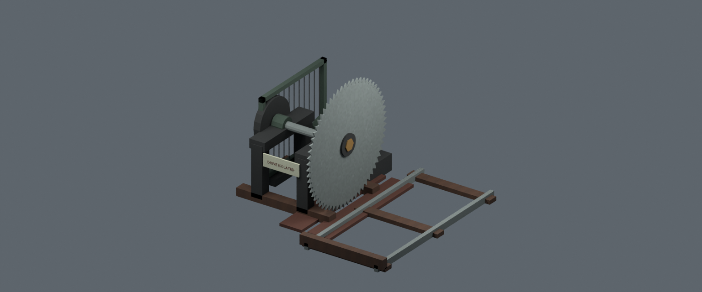

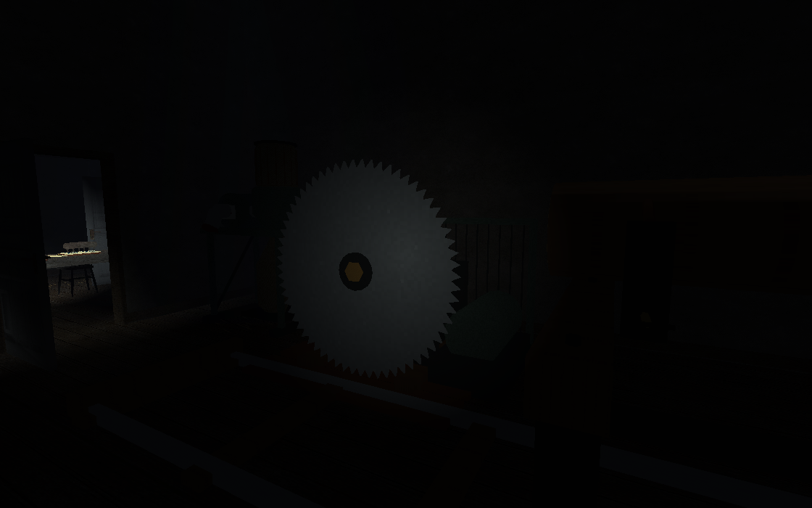
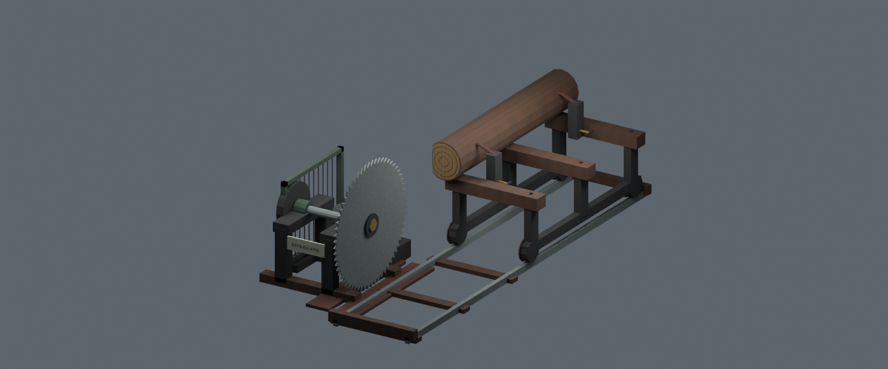
Native assembly inspection: exact relative placement from the authored map.
Download 12-model CC0 kit · Complete editable development scene · Workflow and remaining gates
Scoped Java 17 compilation, physical checks, swept van routes and native source checks passed. Development map remains locked: hunts, full LAN map acceptance and target-hardware performance are unfinished. Studio lighting is for inspection.
2,380 source triangles · static scenery · packed diffuse


1,896 source triangles · static scenery · packed diffuse
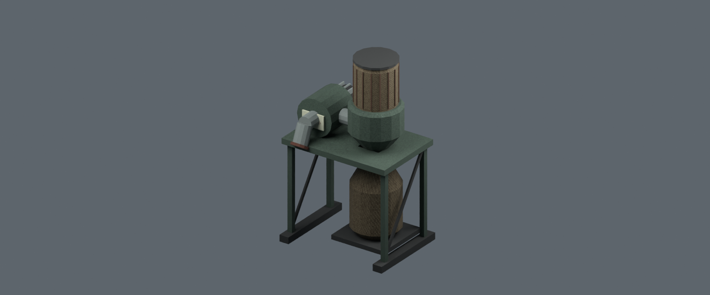
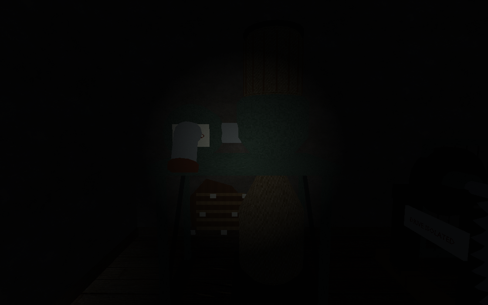
1,088 source triangles · static scenery · packed diffuse
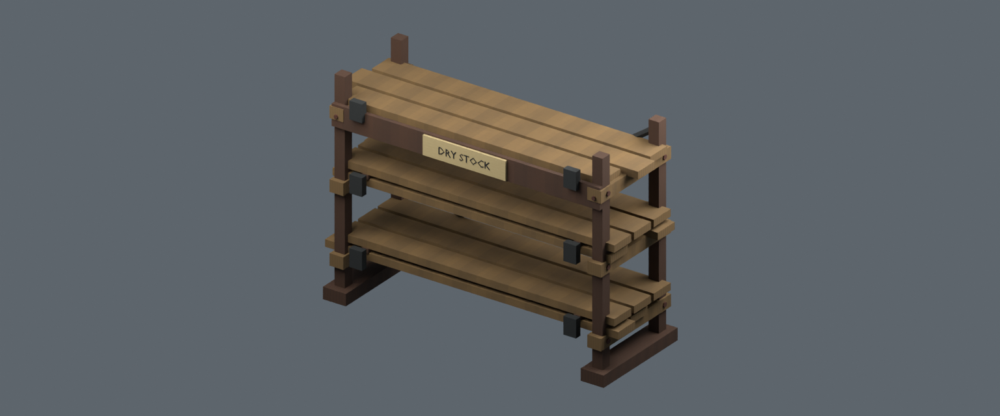
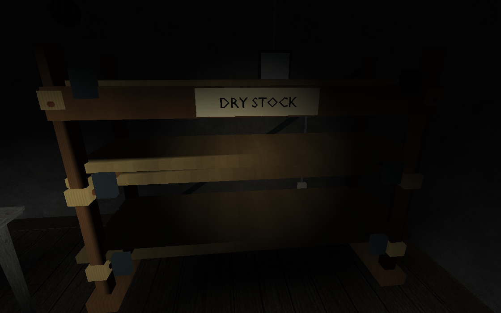
972 source triangles · static scenery · packed diffuse
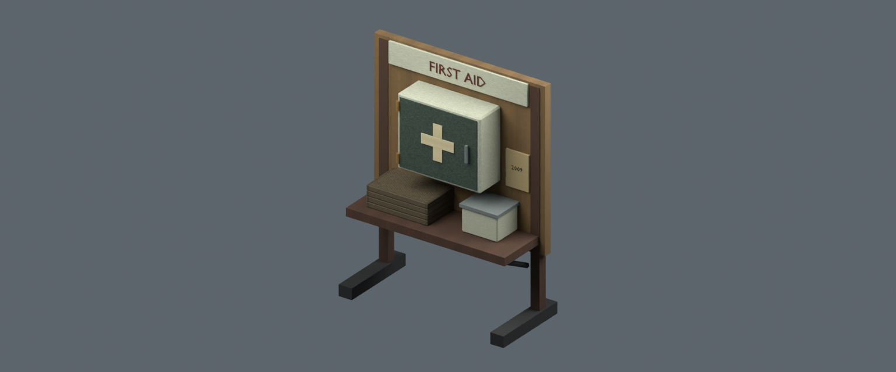
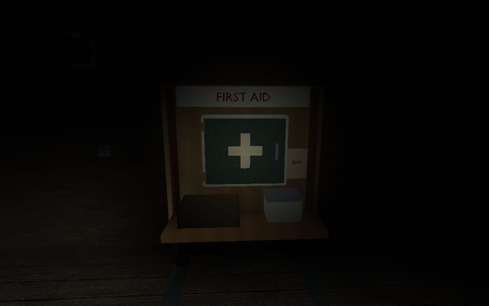
2,414 source triangles · static scenery · packed diffuse
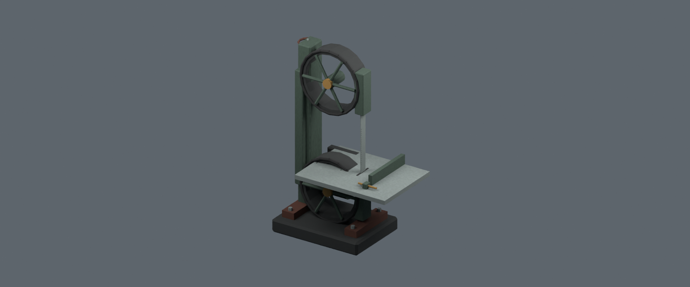
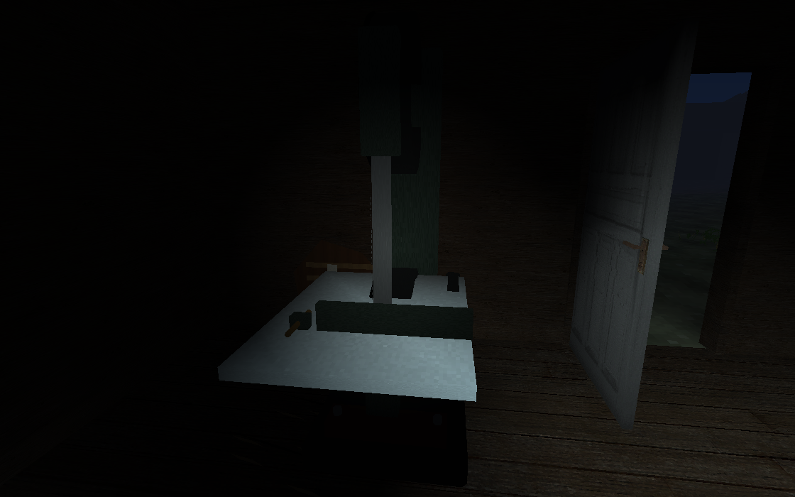
Java, collision, routes and capture report · Native geometry, metal pixel and scene checks · Archive integrity